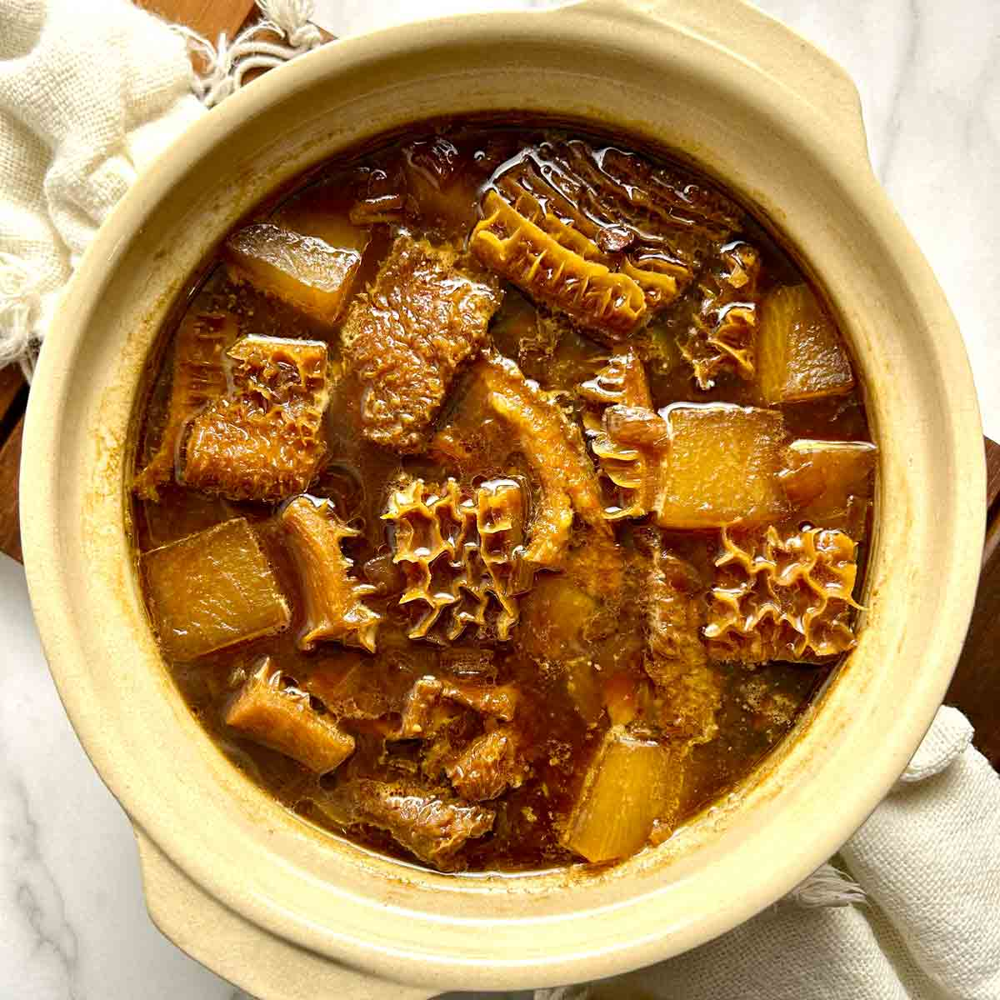

Home
Tripe

Description
Tripe is an edible lining from the stomach of various farm animals, typically ruminants like cows, sheep, and goats. It's considered a byproduct of animal slaughter and is often used in soups, stews, and sauced dishes. Tripe is an edible lining from the stomach of various farm animals, typically ruminants like cows, sheep, and goats. It's considered a byproduct of animal slaughter and is often used in soups, stews, and sauced dishes.
Ingredients
- Whole Sheep tripe
- Water
- Salt
- Onion
- Red Chillies
- Spices/Seasoning
Steps
- Clean your tripe in cold to remove dirt.
- Cut into small pieces and put in your pot.
- Switch on your stove to medium heat and let the tripe boil for an hour with excess water from rinsing (you might want to add a cup of water depending on cooking time).
- Add salt or two chilli beef stock tubes and keep on stirring in between cooking.
- Add salt or two chilli beef stock tubes and keep on stirring in between cooking.
- If necessary you can add 2 tbsp of brown onion soup for thickness.
- Add salt and white pepper for taste.
- Serve with spinach and carrots or with pap/samp/steam bread.